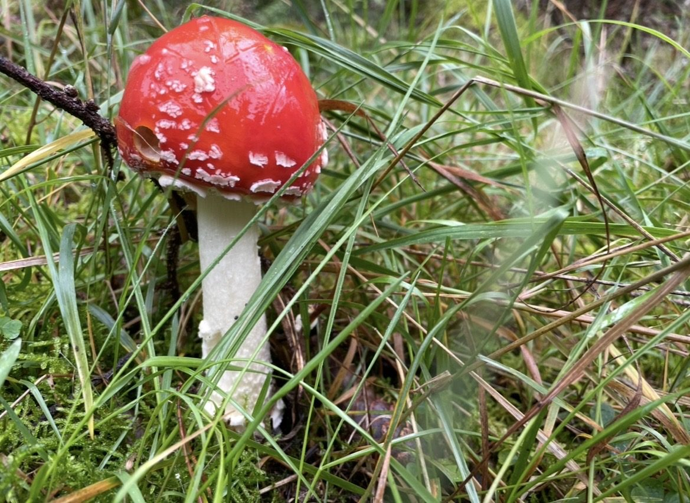
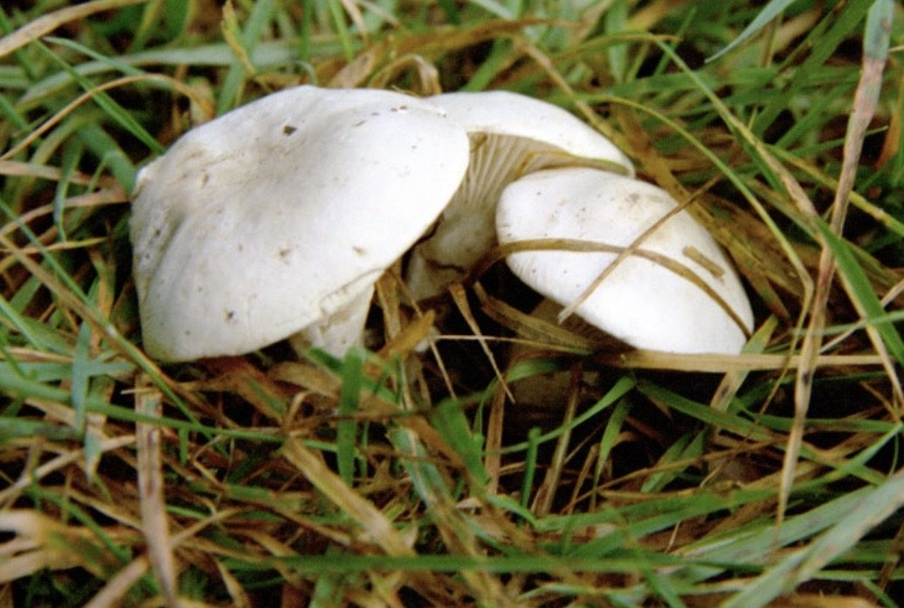
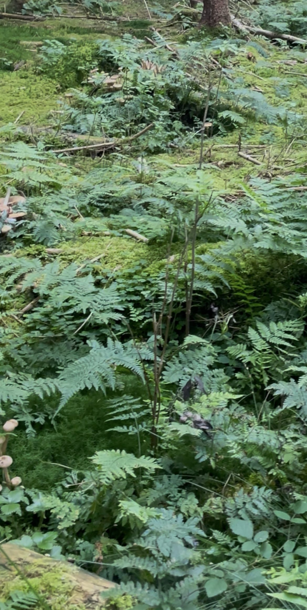
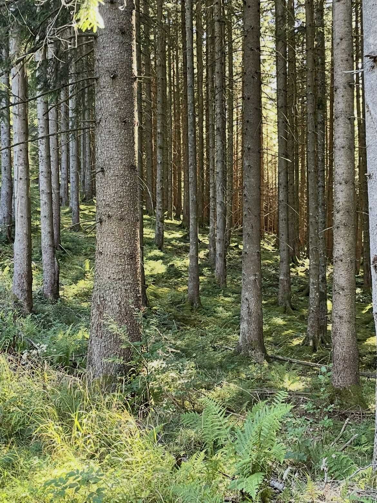
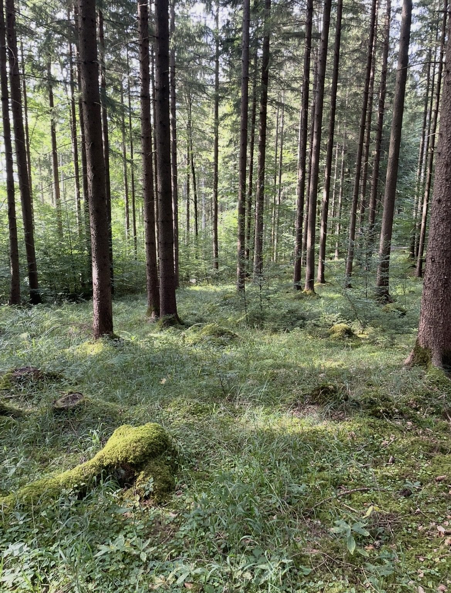

Das Prinzip
Der Fliegenpilz weiß nichts vom Steinpilz
Du gehst durch den Wald, und plötzlich steht da ein Fliegenpilz. Rot, weiß getupft, nicht zu übersehen. Sofort wirst du langsamer — weil du irgendwo gehört hast, dass jetzt auch ein Steinpilz in der Nähe sein müsste.
Manchmal stimmt das. Manchmal überhaupt nicht. Das ist kein Zufall.
Die beiden reden nicht miteinander, füttern sich nicht, folgen einander nicht. Dass sie oft nebeneinander stehen, ist gut dokumentiert — aber eine biologische Verbindung konnte bisher für keinen der vermeintlichen Anzeigerpilze nachgewiesen werden. Naheliegender ist, dass das gemeinsame Auftreten schlicht an ähnlichen Boden- und Witterungsansprüchen liegt.
Das ist der ganze Trick. Ein Anzeiger ist kein Wegweiser, sondern ein Messgerät. Er sagt dir nicht „hier ist ein Steinpilz“, sondern: hier ist der Boden sauer, hier kommt Licht durch, hier ist es feucht genug und nicht überdüngt. Treffen diese Dinge zusammen, passt der Ort eben für mehrere Arten gleichzeitig.
Drei Arten, ein gemeinsames Fenster
Jede Art lebt in einem Ausschnitt der Skala. Ein Anzeiger nützt genau so viel, wie sein Ausschnitt sich mit dem des gesuchten Pilzes überschneidet.
Schematische Darstellung. Die Lage der Balken folgt den Standortangaben der jeweiligen Arten, nicht gemessenen Werten · Darstellung: Pilzgebiete
Die Klassiker
Fliegenpilz und Mehlräsling
Der Fliegenpilz lebt in Symbiose mit Birke, Fichte und Kiefer und bevorzugt saure, nährstoffarme Böden — dieselbe Ecke, in der auch der Fichtensteinpilz zu Hause ist. Deshalb trägt die Regel im sauren Nadel- und Mischwald gut. Im Buchenwald über Kalk trägt sie nicht, weil dort schon der Fliegenpilz selten wird.
Der Mehlräsling ist unter Sammlern der Favorit. Der kleine weiße Pilz riecht auffällig nach frischem Mehl und steht vor allem in Nadel- und Nadelmischwäldern bei Fichten, gern am Waldrand, auf Waldwegen und Lichtungen; in Oberbayern hat er von August bis Oktober Hauptsaison. Auch hier fehlt ein Beleg für eine Kopplung an den Steinpilz. Er zeigt einfach dieselbe Kombination an — und er zeigt sie oft früher.


Foto: James Lindsey at Ecology of Commanster, „Clitopilus prunulus - Lindsey.jpg“, Wikimedia Commons, Lizenz CC BY-SA 2.5, Bildausschnitt verändert.

Bitte lesen, nicht sammeln
Der Mehlräsling lässt sich mit weißen Trichterlingen verwechseln, von denen einige stark giftig sind. Wer ihn als Wegweiser benutzt, braucht ihn nicht in den Korb zu legen — schauen reicht vollkommen.
Und grundsätzlich: Diese Seite hilft dir, geeignete Wälder zu erkennen. Bestimmen musst du selbst, im Zweifel bei einer Pilzsachverständigen oder einem Pilzsachverständigen vor Ort.
Der zuverlässigste Zeiger
Der Farn ist ein Messgerät
Für Pflanzen gibt es eine Art ökologischen Steckbrief: die Zeigerwerte nach Ellenberg. Jede Art bekommt Zahlen dafür, wie viel Licht, Feuchte, Säure und Nährstoffe sie braucht. Beim Adlerfarn steht dort:
Lichtzahl 6 · Feuchtezahl 5 · Reaktionszahl 3 — saurer Boden · Stickstoffzahl 3 — nährstoffarm.
Zeigerwerte des Adlerfarns nach Ellenberg & Leuschner.
Das ist fast deckungsgleich mit dem Standortfenster des Fichtensteinpilzes. Passend dazu wächst der Adlerfarn bevorzugt auf sauren Böden in den Säumen und Lichtungen von Eichenwäldern, Kiefernforsten und Moorwäldern, auf nährstoffarmen, humosen Böden an sonnigen bis halbschattigen Standorten. Wo er steht, hat er dir drei Messwerte abgelesen, ohne dass du graben musst.
Zwei Einschränkungen, die man kennen muss
Erstens ist „Farn“ keine Pflanze, sondern ein Dutzend. Wurmfarn, Frauenfarn und die Dornfarne, die in Fichtenwäldern ganze Teppiche bilden, stehen für frischere, humusreichere, oft nährstoffreichere Böden — eine andere Nachricht als die des Adlerfarns. Wer den Farn als Zeiger benutzt, muss wissen, welcher da steht.
Zweitens ist ein dichter Teppich etwas anderes als ein lichter Saum. Ein jahrelang ungestörter Farnbestand baut eine mächtige Streuauflage auf — und die ist ungünstig, wie der nächste Abschnitt zeigt. Der Farn am lichten Rand ist das gute Zeichen, nicht das geschlossene Dickicht.


Der Boden
Fette Böden sind schlechte Pilzböden
Mykorrhizapilze sind Sparer. Sie leisten für den Baum genau das, was er selbst nicht kann: Nährstoffe aus einem kargen Boden holen. Ist der Boden ohnehin reich, braucht der Baum den Handel weniger dringend — und der Pilz bekommt weniger Zucker.
Das findet man im Wald wieder: Die Entwicklung der Ektomykorrhiza wird durch dicke, stickstoffreiche Streuauflagen beeinträchtigt, und zwischen der Mächtigkeit der Streuschicht und der Zahl der Fruchtkörper besteht ein negativer Zusammenhang. Nährstoffarme Verhältnisse dagegen begünstigen Wurzelwachstum und Mykorrhizabildung.
Deshalb ist die Brennnessel ein sehr guter Anzeiger — nur mit umgekehrtem Vorzeichen. Wo sie flächig steht, ist viel Stickstoff im Spiel. Dreh um.
Zwei Waldböden, zwei Ergebnisse
Links mager und licht: dünne Streu, Moos, das Myzel liegt dicht unter der Oberfläche. Rechts fett: eine mächtige Auflage, Stickstoffzeiger im Bestand, das Netz zieht sich zurück.
Schematische Darstellung des Zusammenhangs zwischen Streuauflage, Stickstoff und Fruchtkörperbildung. Grundlage: Baar & de Vries, zitiert in der Untersuchung zur Moosschicht bei Cantharellus cibarius · Darstellung: Pilzgebiete
Warum die Regeln sich widersprechen
„Steinpilz“ ist kein Pilz
Viele Sammler finden ihre besten Steinpilze nicht im dunklen Hochwald, sondern an einer warmen, grasigen Böschung, an einer Lichtung, am Rand eines Weges. Das widerspricht keiner Regel. Es hat zwei Gründe.
Erstens Wärme und Luft. Am Rand ist der Boden wärmer, die Streuschicht dünner, das Gras zeigt Licht an. Genau die Bedingungen, unter denen ein Mykorrhizapilz gern fruchtet — auch der Mehlräsling steht deutlich häufiger am Waldrand und auf Lichtungen als tief im Bestand.
Zweitens, und das ist der eigentliche Knackpunkt: Was wir „Steinpilz“ nennen, sind mindestens vier Arten. Jede hat ihren eigenen Baum und ihren eigenen Kalender.
Vier Steinpilze, vier Kalender
Ungefähre Hauptzeiten und Baumpartner. Wer alle vier „Steinpilz“ nennt, bekommt zwangsläufig widersprüchliche Faustregeln.
Zeiträume gerundet nach den gängigen Artbeschreibungen; regional und je nach Jahr verschieben sie sich deutlich · Darstellung: Pilzgebiete
Wie weit das gehen kann, zeigt ein Fund im Engadin. Auf 2440 Metern, weit über der Baumgrenze im Skigebiet Motta Naluns, wuchsen wiederholt Steinpilze. Die genetische Untersuchung der Mykorrhizastrukturen ergab einen unscheinbaren Partner — die Kraut-Weide, ein Zwergstrauch von wenigen Zentimetern Höhe. Damit ist erwiesen, dass der Steinpilz nicht auf große Bäume angewiesen ist.
Ein sonniger Hang mit Gras kann also durchaus passen. Man muss nur wissen, welcher Partner darin steckt.

Andere Art, andere Zeiger
Und der Pfifferling?
Bei ihm funktioniert dieselbe Logik mit anderen Messgeräten. Hier ist es vor allem das Moos. In einer Untersuchung produktiver Pfifferling-Standorte waren häufiges Moosvorkommen, ein hohes C:N-Verhältnis des Bodens und ein mäßig saurer Sandboden die Merkmale der günstigen Kleinlebensräume — während Heidekrautgewächse negativ korreliert waren. Dazu passen die üblichen Standortangaben mit einem pH zwischen etwa 4 und 5,5 auf sauren, gut durchlässigen Böden mit tiefem Humus.
Moos ist beim Pfifferling also das, was der Adlerfarn beim Steinpilz ist. Mehr dazu steht im Artikel Der Echte Pfifferling.
Aussortiert
Was nicht funktioniert
„Sieben Schritte nach Norden“ Mythos
Feste Abstands- oder Richtungsregeln zwischen Fliegenpilz und Steinpilz gibt es nicht. Es existiert keine Verbindung, die einen Abstand vorgeben könnte.
Die „Steinpilzmutter“ Mythos
Der Mehlräsling erzeugt oder füttert keinen Steinpilz. Er steht am selben Ort — und die Regel funktioniert genauso gut andersherum.
Ein einzelner Anzeiger reicht nicht
Ein Fliegenpilz allein sagt wenig. Erst die Kombination — passende Baumart, saurer Boden, dünne Streu, Licht, Moos oder Farn — macht eine Stelle plausibel.
Der Zeitpunkt
Der Ort ist nur die halbe Miete
Anzeiger sagen dir, wo. Sie sagen dir nicht, wann. Das übernimmt das Wetter, und zwar mit erstaunlich langer Vorlaufzeit: Zehn Jahre systematische Zählung in einem mitteleuropäischen Buchenwald ergaben ein geschätztes Temperaturoptimum von rund 13 °C im Mittel der Tage vor dem Fund — und keinen einfachen Zusammenhang mit dem Regen von gestern.
Der Wald von heute erzählt dir, was vor Wochen passiert ist. Die ganze Rechnung steht im Artikel Wie schnell wächst ein Steinpilz?.
Was wir ehrlicherweise nicht wissen
Die belastbaren Zahlen zu Vegetation und Pilzvorkommen stammen überwiegend aus mediterranen Zistrosen-Beständen und nordamerikanischen Kiefernwäldern. Dass sich die Zusammenhänge auf bayerische Fichten- und Buchenwälder übertragen, ist plausibel, aber nicht im Detail belegt.
Vor allem: Es gibt bis heute keine Studie, die „Anzeigerpilz suchen“ als Suchstrategie geprüft hätte. Gut belegt sind die Standortansprüche der beteiligten Arten. Der Rest ist Erfahrung — gute Erfahrung, aber eben Erfahrung.
Drei Dinge, die man mitnehmen kann
- Lies den Ort, nicht den Pilz. Anzeiger sind Messgeräte für Boden, Licht und Feuchte. Deshalb tragen sie in manchen Wäldern und in anderen nicht.
- Achte auf die Auflage. Dünne Streu und Moos sind gute Zeichen, ein Brennnesselfeld ist ein schlechtes. Karger Boden heißt mehr Mykorrhiza, nicht weniger.
- Frag, welcher Steinpilz. Vier Arten, vier Bäume, vier Zeiten — und einer davon kommt sogar mit einer Zwergweide über der Baumgrenze aus.
Belege
Quellen
Alle Aussagen auf dieser Seite stützen sich auf die folgenden Veröffentlichungen. Grafiken und Text sind eigene Darstellungen.
- Gemeiner Steinpilz — Ökologie und Vergesellschaftung. Grundlage der Aussage, dass die Vergesellschaftung mit Fliegenpilz, Mehlräsling und Perlpilz dokumentiert, eine biologische Verbindung aber für keinen dieser Pilze nachgewiesen ist, und dass ähnliche Boden- und Witterungsansprüche die naheliegendere Erklärung sind. biologie-seite.de
- Peter, M.; Treidl, A. — Mykorrhizapilze: die geheimen Helfer im Wald. Grundlage des Steinpilzfundes auf 2440 m im Engadin mit der Kraut-Weide (Salix herbacea) als genetisch nachgewiesenem Mykorrhizapartner. waldwissen.net
- Ellenberg, H.; Leuschner, C. — Zeigerwerte der Gefäßpflanzen Mitteleuropas. Grundlage der Zeigerwerte des Adlerfarns (L6 F5 R3 N3). Artenliste mit Zeigerwerten
- Zeigerpflanzen auf Waldstandorten. Grundlage der Angabe, dass der Adlerfarn für Säume und Lichtungen saurer Eichen- und Kiefernwälder charakteristisch ist. forst-rast.de
- Artenportrait Adlerfarn (Pteridium aquilinum). Grundlage der Standortangabe: nährstoffarme, humose, saure Böden, sonnig bis halbschattig. naturadb.de
- Mehlräsling (Clitopilus prunulus). Grundlage der Angaben zu Vorkommen bei Fichten, zur Häufung an Waldrändern, Wegen und Lichtungen, zur oberbayerischen Hauptsaison August bis Oktober sowie zur Verwechslungsgefahr mit weißen Trichterlingen. pilzbuch-pilzwelten.de
- Baar, J.; de Vries, F. — referiert in der Untersuchung zum Einfluss der Moosschicht auf Cantharellus cibarius. Grundlage der Aussage, dass dicke, stickstoffreiche Streuauflagen die Ektomykorrhiza beeinträchtigen und Streuauflage und Fruchtkörperzahl negativ zusammenhängen. ResearchGate
- Rochon, C.; Paré, D.; Pélardy, N.; Khasa, D. P.; Fortin, J. A. — Ecology and productivity of Cantharellus cibarius var. roseocanus in two eastern Canadian jack pine stands. Botany 89 (2011) 663–675. Grundlage der Pfifferling-Merkmale: Moosvorkommen und hohes C:N-Verhältnis positiv, Ericaceen negativ korreliert. doi.org/10.1139/b11-058
- Brejon Lamartiniere, E.; Hoffman, J. I. — Predicting porcini: a decade of sporocarp monitoring reveals the meteorological triggers of Boletus edulis fruiting in central European beech forests. bioRxiv-Preprint, Dezember 2025. Grundlage der Temperaturangabe. Noch nicht abschließend begutachtet. Preprint bei bioRxiv
- Artbeschreibungen der Steinpilzarten (Sommersteinpilz, Bronzeröhrling, Kiefernsteinpilz, Fichtensteinpilz) mit ihren Baumpartnern und Erscheinungszeiten. fundkorb.de · awl.ch
Hinweis. Diese Seite fasst veröffentlichte Fachliteratur und vegetationskundliche Zeigerwerte zusammen. Sie ist keine Fundgarantie. Zeigerpflanzen und Begleitpilze beschreiben Standortbedingungen, keine Fundorte — und regionale Böden, Bestandsgeschichte und Witterung verschieben jede Faustregel. Pilzgebiete zeigt geeignete Wälder, keine geheimen Stellen und keine Bestimmung. Und unabhängig von allem Standortwissen gilt: Iss nie einen Pilz, den du nicht sicher bestimmt hast. Im Zweifel hilft eine Pilzsachverständige oder ein Pilzsachverständiger vor Ort weiter.